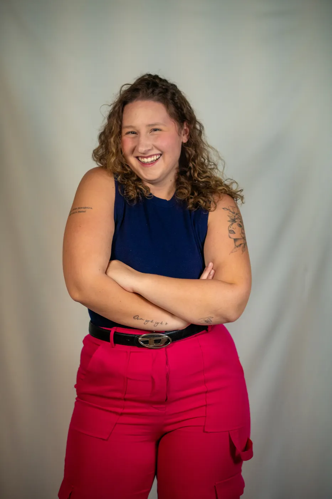
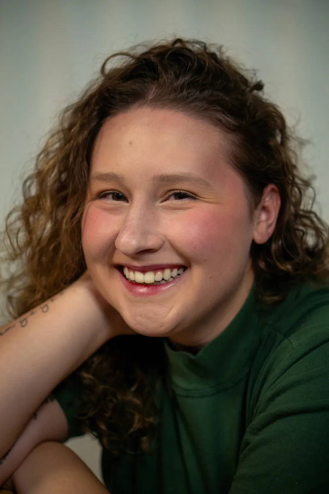
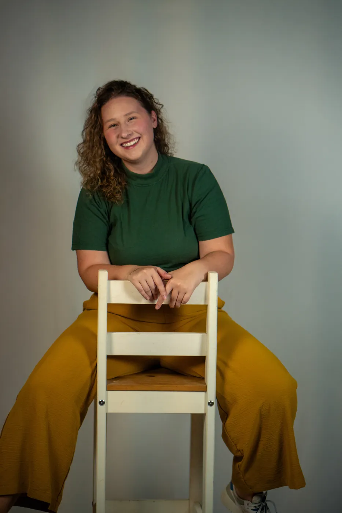
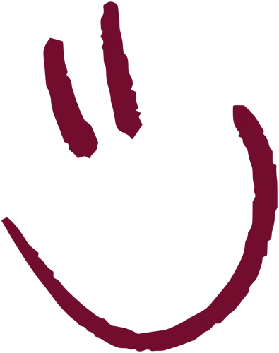
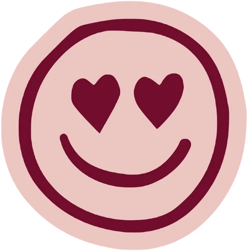

oi, eu sou a
Estratégia de conteúdo pra marcas que querem soar humanas
social media · brand content · comunicação · marketing

- Social media
- Estratégia de conteúdo
- Branding e posicionamento
- Comunicação
- Conteúdo criativo
- Campanhas
- Redes sociais

01 · Quem sou
Eu ajudo marcas e pessoas a descobrirem o que querem dizer. E a dizerem isso com cara de gente.
Trabalho com social media, estratégia de conteúdo e brand content. Na prática, isso quer dizer entender o negócio, achar o jeito certo de falar com quem importa e transformar tudo em conteúdo que as pessoas querem ler até o fim.
Já passei por mercado financeiro, varejo, shopping, escritório de advocacia e blog de nicho. Cada um com seu vocabulário, seu público e seus perrengues. O que levo de um pro outro é o método. Pergunto muito antes de escrever, testo o texto em voz alta e só entrego quando ele soa como a marca falando.
Também faço Teatro, e é de lá que vem boa parte do meu timing, das analogias e dessa mania de ler tudo em voz alta.
- Social media
- Estratégia de conteúdo
- Branding e posicionamento
- Comunicação
- Conteúdo criativo
- Campanhas
- Redes sociais
- Tom de voz
02 · Trabalhos
Cases contados do começo ao fim
Cada projeto tem um contexto, uma pergunta e um jeito de responder. Clica num case pra ver o que eu fiz e por quê.

Post que serviria pra qualquer perfil do Brasil não faz ninguém lembrar de você.
Por isso meu trabalho começa bem antes do primeiro post, numa conversa cheia de perguntas sobre quem é a marca, com quem ela fala e pelo que quer ser lembrada. Só termina quando o conteúdo tem a cara de quem assina.

03 · Clientes
Marcas com quem já dividi a mesa
Setores bem diferentes, e em todos eu comecei pela mesma pergunta. O que essa marca quer que lembrem dela?
- Mercado financeiroSmartSave
- Mercado de capitaisValore
- Varejo e shoppingParkShopping Jacarepaguá
- Condomínios e serviçosViva o Condomínio
- JurídicoRoveda e Marcelino Advogados
- Agência de comunicaçãoAM4
Vamos conversar?
Se a sua marca tem muito a dizer e ainda não achou o jeito, ou se você só quer trocar uma ideia sobre conteúdo, me chama. Eu prometo perguntar bastante antes de sugerir qualquer coisa.
